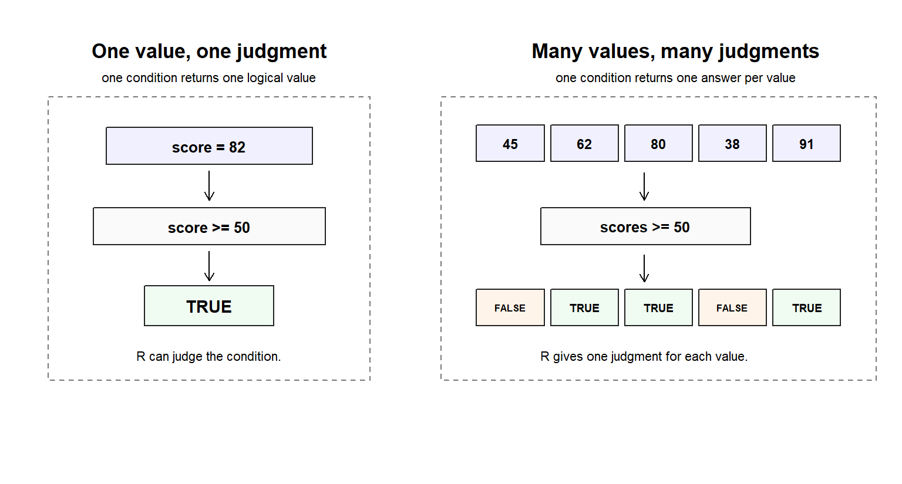

Code
study_hours <- 6
study_hours > 5
#> [1] TRUELeo can now read a simple line of R as structured code.
He knows that values can be stored under names. He knows that structures hold values together. He knows that syntax gives code a readable shape.
Then he writes this:
study_hours <- 6
study_hours > 5
#> [1] TRUEThe result is not another number.
It is a judgment:
TRUE
#> [1] TRUESomething has changed. R is no longer only calculating a value or storing an object. It is evaluating a condition.
That small judgment sits behind serious data work. Filtering rows, checking missing values, identifying learners who meet a rule, and deciding whether code should run all depend on logical thinking.
A researcher may ask:
R cannot answer these questions by guessing. It needs expressions that turn questions into conditions.
This chapter teaches logic as R’s system of judgment. By the end, Leo should be able to:
TRUE and FALSE;& differs from &&, and why | differs from ||;if needs one logical answer;is.na() to check missing values;Chapter 6 showed that code needs structure. A line of R is not a pile of symbols. Names, values, operators, function calls, commas, and parentheses must be arranged so R can read them.
Chapter 7 moves from structure into judgment.
The new question is not only:
Can R read this expression?
It is also:
What judgment does this expression produce?
Syntax tells R how to read an expression.
Logic tells R how to judge a condition.
A calculation asks, “What value should be produced?”
A logical test asks, “Is this condition true?”
That difference matters because data work constantly asks R to decide what qualifies.
TRUE and FALSER has two central logical values:
TRUE
#> [1] TRUE
FALSE
#> [1] FALSEThey are not text. They are not written inside quotation marks.
Compare:
class(TRUE)
#> [1] "logical"
class("TRUE")
#> [1] "character"TRUE is a logical value. "TRUE" is character text.
That distinction matters because logical values can guide decisions. They can be stored, counted, reversed, combined, and used to select data.
Try a small condition:
10 > 5
#> [1] TRUE
10 < 5
#> [1] FALSE
10 == 10
#> [1] TRUEEach expression asks a question and returns a logical answer.
The question may involve one value, as above. Later, the same idea can be applied across many values or many rows.
TRUE and FALSE are real values.
They are the decision values behind filtering, checking, subsetting, and conditional execution.
Arithmetic operators calculate. Comparison operators judge.
This is a calculation:
10 + 5
#> [1] 15This is a judgment:
10 > 5
#> [1] TRUEBoth use symbols. They do different jobs.
| Operator family | Main job | Examples |
|---|---|---|
| Arithmetic | calculate numeric results | +, -, *, /, ^, %%, %/% |
| Comparison | compare values and return logical results | >, <, >=, <=, ==, != |
| Logical | combine or reverse logical results | &, &&, \|, \|\|, ! |
| Assignment | store values in names | <-, =, -> |
| Subsetting and access | select or access parts of objects | [ ], [[ ]], $ |
This map is deliberately small. Leo will meet other operator families later, but these are the ones that matter most for the logic chapter.
Comparison operators ask whether a relationship is true.
| Operator | Meaning | Example |
|---|---|---|
> |
greater than | score > 80 |
< |
less than | score < 80 |
>= |
greater than or equal to | score >= 80 |
<= |
less than or equal to | score <= 80 |
== |
exactly equal to | score == 80 |
!= |
not equal to | score != 80 |
Use a small learner score:
score <- 82
score > 80
#> [1] TRUE
score == 82
#> [1] TRUE
score != 70
#> [1] TRUEThe first line stores a value. The remaining lines ask questions about that value.
A comparison is not just a symbol between two values. It is a question written in a form R can evaluate.
When R evaluates a condition, the result is a logical judgment. Sometimes the judgment is one value: TRUE or FALSE. Sometimes, when the same condition is applied across several values, R returns several judgments.
The figure below gives a simple map of that idea.

As shown in Figure fig-condition-to-logical-judgment, logic begins with a condition. In the first panel, one score is tested and R returns one judgment. In the second panel, the same kind of rule is applied across several scores, so R returns one judgment for each value.
This is why logical values matter. They are not decorative outputs. They are the answers R produces when code asks a condition.
Before running the next chunk, pause and predict the output.
Will each expression return TRUE or FALSE?
score <- 82
score > 80
#> [1] TRUE
score == 80
#> [1] FALSE
score != 70
#> [1] TRUEThe point is not speed. The point is to begin reading conditions as questions.
In plain language:
score > 80 asks whether the score is greater than 80;score == 80 asks whether the score is exactly 80;score != 70 asks whether the score is not 70.Prediction forces Leo to reason before the console answers for him.
One of the most common beginner mistakes is confusing storage with equality.
These lines do different jobs:
score <- 80
score == 80
#> [1] TRUE<- assigns. It stores 80 in the name score.
== compares. It asks whether score is equal to 80.
The equals sign = can assign in some contexts, and it is commonly used to name function arguments:
round(77.46, digits = 1)
#> [1] 77.5For clarity in this book, Leo should use:
<- for ordinary assignment;= mainly for naming function arguments;== for equality tests.Leo wants to test whether score is equal to 80.
He writes:
score = 80That code runs, but it assigns. It does not test equality.
The comparison he wanted is:
score == 80
#> [1] TRUEA single missing = changes the meaning of the line.
This is a useful moment of friction. R is not punishing the learner. It is following the operator that was written.
Comparison operators create judgments. Logical operators combine or reverse those judgments.
Suppose Leo has two learner indicators:
study_hours <- 6
project_score <- 85
study_hours > 5
#> [1] TRUE
project_score > 80
#> [1] TRUEThe first comparison asks whether study hours are greater than 5. The second asks whether project score is greater than 80.
Now combine both conditions:
study_hours > 5 & project_score > 80
#> [1] TRUEThis asks whether both conditions are true.
Logical operators do not calculate new measurements. They combine or reverse logical judgments. They build rules from logical results.
& means AND, position by position when there are many values.| means OR, position by position when there are many values.! reverses a logical value.&& means AND for a single control decision.|| means OR for a single control decision.Try the basic forms:
study_hours <- 6
project_score <- 85
first_script_completed <- FALSE
study_hours > 5 & project_score > 80
#> [1] TRUE
study_hours > 10 | project_score > 80
#> [1] TRUE
!first_script_completed
#> [1] TRUEAND narrows. OR widens. NOT reverses.
Together, they help R build conditions that can guide action.
& Versus &&, and | Versus ||This is a high-risk distinction, so Leo should slow down.
R often works with many values at once. For many values, use the element-wise operators & and |.
study_hours <- c(3, 6, 8)
project_score <- c(70, 85, 90)
study_hours > 5
#> [1] FALSE TRUE TRUE
project_score > 80
#> [1] FALSE TRUE TRUE
study_hours > 5 & project_score > 80
#> [1] FALSE TRUE TRUER checks each position. The result has one logical answer for each learner.
The single-decision operators && and || are different. They are mainly useful when R needs one decision, often inside if.
Do not use them for row-by-row filtering.
Display-only example:
study_hours > 5 && project_score > 80
# Not appropriate for row-by-row logic: && uses a single decision, not one answer per value.The same idea applies to OR:
study_hours > 5 | project_score > 80
#> [1] FALSE TRUE TRUEDisplay-only example:
study_hours > 5 || project_score > 80
# Not appropriate for row-by-row logic: || uses a single decision, not one answer per value.Use & and | when working across vectors or dataset rows.
Use && and || when writing one control decision, usually inside if.
This distinction protects Leo from a common filtering mistake.
if: A Single Decision, Not a FilterSo far, Leo has used logic to test conditions. Now he sees logic control whether code should run.
score <- 82
if (score >= 50) {
"pass"
}
#> [1] "pass"The condition inside if must resolve to one logical answer: one TRUE or one FALSE.
Add an alternative path:
score <- 42
if (score >= 50) {
"pass"
} else {
"not yet"
}
#> [1] "not yet"If the condition is true, R runs the first block. Otherwise, it runs the second block.
This is conditional execution.
It is not the same as filtering.
Filtering usually applies one condition across many values or many rows. if decides whether one block of code should run.
Display-only mistake:
scores <- c(45, 62, 80, 38, 91)
if (scores >= 50) {
"pass"
}
# Error: the condition has length > 1The problem is not the comparison itself. The comparison returns many logical values. if needs one.
if asks whether code should run.
Filtering asks which values or rows should stay.
Both depend on logic, but they use logic for different jobs.
R is built for working with many values at once.
scores <- c(45, 62, 80, 38, 91)
scores
#> [1] 45 62 80 38 91Now ask one rule of all the values:
scores >= 50
#> [1] FALSE TRUE TRUE FALSE TRUER does not test only the first value. It tests each value and returns one logical answer per score.
R applies the same rule across many values automatically.
This behaviour is called vectorised logic.
In a spreadsheet, Leo might write a formula beside each row. In R, he can write one expression that applies across a whole vector.
Before running the next chunk, predict the shape of the result.
Will R return one logical value or many logical values?
scores <- c(45, 62, 80, 38, 91)
scores >= 50
#> [1] FALSE TRUE TRUE FALSE TRUE
scores == 80
#> [1] FALSE FALSE TRUE FALSE FALSE
scores != 38
#> [1] TRUE TRUE TRUE FALSE TRUEEach expression compares one vector with one rule. The result is a logical vector.
The rule is written once. R applies it to many values.
A logical result can select matching values.
scores <- c(45, 62, 80, 38, 91)
scores >= 50
#> [1] FALSE TRUE TRUE FALSE TRUE
scores[scores >= 50]
#> [1] 62 80 91The condition inside the square brackets produces logical answers. The square brackets keep the values whose matching logical positions are TRUE.
This is the beginning of filtering.
Filtering is logic applied to a data structure.
The condition decides what qualifies. The structure determines what can be selected.
Leo does not need full filtering workflows here. He only needs the principle: a condition can become a selector.
Real data contains missing values.
scores <- c(45, 62, NA, 38, 91)
scores
#> [1] 45 62 NA 38 91Now compare the scores with 50:
scores >= 50
#> [1] FALSE TRUE NA FALSE TRUER returns NA where the comparison cannot be completed.
Why?
Because R cannot decide whether a missing value is greater than or equal to 50. NA marks uncertainty. It interrupts judgment.
Leo may try this:
scores == NA
#> [1] NA NA NA NA NAThis does not work the way many beginners expect. R cannot use ordinary equality to confirm an unknown value.
To test missingness, use is.na():
is.na(scores)
#> [1] FALSE FALSE TRUE FALSE FALSESpecial values require special checks.
Use is.na() to test missingness. Do not rely on == NA.
This matters in real data cleaning. A missing value is not a blank decoration. It changes what R can know, compare, summarise, and decide.
Leo wants to find which scores are missing.
His first attempt is tempting:
scores == NA
#> [1] NA NA NA NA NAThe result is not useful for identifying the missing position.
He repairs the test:
is.na(scores)
#> [1] FALSE FALSE TRUE FALSE FALSENow the missing value is visible.
This is a small win, but it is an important one. Leo has not merely memorised a function. He has learned a diagnostic rule: when a value is special, use the special check designed for it.
df_r_migrationLeo now connects logic to the book’s recurring dataset, df_r_migration.
He does not need to load the dataset here. He only needs to read the shape of expressions he will soon use.
df_r_migration$study_hours > 5This would test whether each learner studied more than five hours.
df_r_migration$project_score >= 80This would test whether each project score is at least 80.
df_r_migration$first_script_completedThis logical column already contains TRUE and FALSE values.
This would test whether each learner completed the first script.
df_r_migration$completion_status == "completed"This would test whether each learner has a completed status.
Each expression would return a logical vector, one answer per row.
Leo can read the movement:
That is enough for now. Later chapters will teach full filtering workflows.
Leo does not need to master every operator family now.
The practical priority at this stage is smaller: arithmetic operators calculate, comparison operators produce logical judgments, logical operators combine or reverse those judgments, assignment stores results, and subsetting uses logical results to select values.
The remaining operator families are introduced only so they will look less strange when they appear later.
This is a recognition map, not a memorisation list.
| Operator family | What Leo should know now | Examples |
|---|---|---|
| Namespace operators | used to call objects from a specific package | package::function() |
| Formula operator | used later for modelling relationships | y ~ x |
| Pipe operators | used later to pass output forward in workflows | |> and %>% |
| Special binary operators | used for special relationships or operations | %in%, %*% |
| Sequence operator | creates simple sequences | 1:5 |
| Advanced access operator | appears in advanced object systems | @ |
| Help operators | open or search help pages | ?mean, ??median |
This preview should not interrupt the chapter’s main lesson. Logic is the priority.
When code gives the wrong logical result, Leo should ask what kind of problem he is facing:
A logic problem can be more dangerous than a syntax problem. A syntax problem usually stops the code. A logic problem may run and still select the wrong cases.
That is why Leo should inspect logical results before trusting them.
| Mistake | Why it causes trouble | Better habit |
|---|---|---|
Using = or <- when testing equality |
assignment stores a value instead of asking a question | use == for equality tests |
| Putting logical values in quotes | "TRUE" is text, not logical TRUE |
write TRUE and FALSE without quotes |
Using == NA to find missing values |
NA marks uncertainty and needs a special check |
use is.na() |
Using && or || for row-by-row rules |
they are single-decision operators | use & and | for vectors and rows |
Giving if a vector condition |
if needs one TRUE or FALSE |
use if for one decision and filtering for many values |
| Forgetting to inspect logical output | a condition may run but ask the wrong question | print or inspect the logical result first |
These mistakes are not signs that Leo cannot code. They are signs that logic has rules, and those rules become clearer with practice.
Leo is not expected to master every operator in R.
He is not expected to write complex filters, advanced control flow, loops, modelling formulas, or tidyverse pipelines yet.
At this stage, he only needs the logic core: comparisons create judgments, logical operators combine judgments, missing values need special checks, and many-value logic behaves differently from single-decision logic.
Leo has now learned that logic is R’s system for turning conditions into judgments.
He can now:
TRUE and FALSE as logical values;& and | differ from && and ||;if needs one logical answer;is.na() to check missing values;More importantly, Leo has learned to inspect logical results before trusting them.
Leo writes:
Logic is how R answers conditions. A comparison asks a question. A logical operator combines answers. Assignment stores. Filtering keeps what matches.
ifdecides whether code should run. Missing values need special checks.
That note will matter later when the dataset becomes larger and the questions become more serious.
Leo can now read code structure and logical judgment.
He knows that R can calculate, compare, store, combine conditions, select values, and make simple decisions.
But he has also seen something else: many useful actions would be tiring to write from scratch every time.
Checking missing values, calculating summaries, rounding numbers, joining text, finding lengths, and inspecting objects all require repeatable actions.
The next question is practical:
What actions does R already know how to perform?
Chapter 8 introduces built-in functions: R’s ready-made action system.
Logic helps R judge conditions.
Functions help R perform reusable actions.
The next chapter shows how Leo can use actions R already knows.